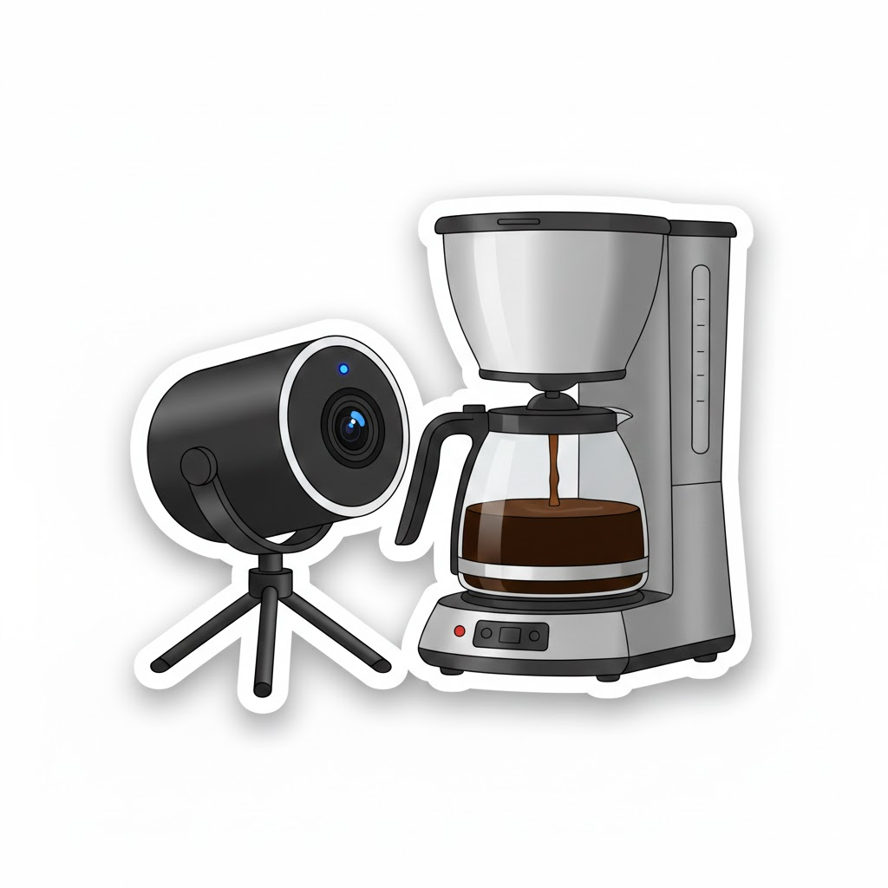

Conheca um pouco de mim e dos componentes que trabalho...

Quem sou eu?
Sejam bem-vindos!
Me chamo Vladismara mas todos me chamam de Vlá. Tenho 47 anos, moro na cidade de Manoel Ribas desde os 5, sou nascida em Sao Paulo capital. Sou casada com o Alexandre e temos uma filha de 16 anos, Lara.
Comecei minha carreira como prof em 1997 na Escola Municipal Renato Siloto. No ano de 2006 comecei a trabalhar no colégio Reni com o Curso Técnico em Desenvolvimento de Sistemas e continuo trabalhando até hoje.
Educação Digital
Por: Vlá Martins
Componente da 1ª Série do Médio Integral. Todas as turmas, exatas ou humanas tem esse componente. Sao duas aulas por semana sempre no laboratório de informática.
Componente da 1ª série do Curso Técnico em Desenvolvimento de Sistemas. Conta com 3 aulas semanais, sendo 1 teórica em sala de aula e 2 práticas no Laboratório de Informática.
Componente da 2ª série do Curso Técnico em Desenvolvimento de Sistemas. Conta com 3 aulas semanais, todas sao aulas práticas no Laboratório de Informática, e eventualmente temos alguma delas teórica.
Apesar de Alan Turing ser conhecido como pai da computação, ele não criou o primeiro computador.
Entre os primeiros computadores, um deles foi chamado Colossus projetado por Tommy Flowers durante a
Segunda Guerra Mundial e também, praticamente na mesma época, o ENIAC foi projetado por J. Presper
Eckert e John Mauchly.
Embora o Colossus tenha funcionado antes como um "herói de guerra" especializado, o ENIAC é
frequentemente chamado de "pai" por ser o primeiro programável de uso geral.
E aí, qual você consideraria como o primeiro computador?